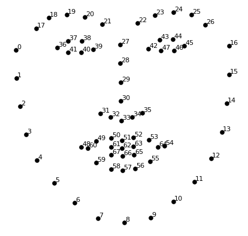

Чекори при извршување на програмата¶
Вчитување на потребните пакети и слики кои ни се потребни¶
Импорт на сите потребни пакети:
import cv2 import dlib import numpy as np
Вчитување на двете слики, изворната и крајната, врз која ќе се врши замената на лицата и нивно претворање во сив формат:
img1 = cv2.imread("media/736px-Josip_Broz_Tito_uniform_portrait.jpg") img2 = cv2.imread("media/768px-Queen_Elizabeth_II_of_New_Zealand_(cropped).jpg") img1_gray = cv2.cvtColor(img1, cv2.COLOR_BGR2GRAY) img2_gray = cv2.cvtColor(img2, cv2.COLOR_BGR2GRAY)
Дефинирање на потребните детектор на лица и предвидувач на “landmark” точки на истите и нивно искористување¶
Дефинирање на детекторот и предвидувачот користени за наоѓање на лица на дадена слика и модел за предвидување на 68 “landmark” точки на истите:
detector = dlib.get_frontal_face_detector() predictor = dlib.shape_predictor("media/shape_predictor_68_face_landmarks.dat")
Примена на истото кон изворната слика:
faces = detector(img1_gray) for face in faces: landmarks = predictor(img1_gray, face) landmarks_points1 = [] for n in range(0, 68): x = landmarks.part(n).x y = landmarks.part(n).y landmarks_points1.append((x, y))
Земање на надворешните “landmark” точки од сликата како релевантни за изборот на лицето:
points = np.array(landmarks_points1, np.int32) convexhull = cv2.convexHull(points)
Со помош на надворешните “landmark” точки кои ги детектиравме креираме маска со чија помош го земаме делот што е внатре во полигонот дефиниран од истите точки како валиден:
mask = np.zeros_like(img1_gray) ... cv2.fillConvexPoly(mask, convexhull, 255)
Примена на методата на триангулација на Delaunay и наоѓање на триаголници на лицата соодветно¶
Доколку го искористиме целото лице за директна замена, остануваме склони дека при некое движење на истото, насмевка или нешто друго, ќе се добие замена со послаб квалитет. Затоа, замената ќе ја донесеме на ниво на “landmark” точките и методата на триангулација на “Delaunay”. Помеѓу секои три најблиски од нив ќе нацртаме триаголници и замената ќе ја правиме помеѓу нив соодветно. Па така, доколку лицето за замена малку се помрдне, или се насмее, делот од сликата кој ќе биде афектиран од тоа ќе е значително помал:
rect = cv2.boundingRect(convexhull) subdiv = cv2.Subdiv2D(rect) subdiv.insert(landmarks_points1) triangles = subdiv.getTriangleList() triangles = np.array(triangles, dtype=np.int32) indexes_triangles = [] for t in triangles: pt1 = t[0], t[1] pt2 = t[2], t[3] pt3 = t[4], t[5] index_pt1 = np.where((points == pt1).all(axis=1)) index_pt1 = extract_index_nparray(index_pt1) index_pt2 = np.where((points == pt2).all(axis=1)) index_pt2 = extract_index_nparray(index_pt2) index_pt3 = np.where((points == pt3).all(axis=1)) index_pt3 = extract_index_nparray(index_pt3) if index_pt1 is not None and index_pt2 is not None and index_pt3 is not None: triangle = [index_pt1, index_pt2, index_pt3] indexes_triangles.append(triangle)
Некои од вредностите во indexes_triangles се следните:
[[36, 18, 37], [18, 36, 17], [7, 57, 8], ...]
Ова значи дека ќе имаме триаголници помеѓу точките 36, 18, 37, потоа 18, 36, 17 и тн. од сликата:

Истите триаголниците кои ги најдовме кај изворната слика ги применуваме и кај дестинациската:
for triangle_index in indexes_triangles: pt1_2 = landmarks_points2[triangle_index[0]] pt2_2 = landmarks_points2[triangle_index[1]] pt3_2 = landmarks_points2[triangle_index[2]]
За секоја од двете слики извршуваме операциите над секој од соодветните триаголници:
tr1 = np.array([pt1_1, pt2_1, pt3_1], np.int32) rect1 = cv2.boundingRect(tr1) x, y, w, h = rect1 cropped_triangle1 = img1[y: y + h, x: x + w] cropped_tr1_mask = np.zeros((h, w), np.uint8) points1 = np.array([[pt1_1[0] - x, pt1_1[1] - y], [pt2_1[0] - x, pt2_1[1] - y], [pt3_1[0] - x, pt3_1[1] - y]], np.int32) cv2.fillConvexPoly(cropped_tr1_mask, points1, 255) cropped_triangle1 = cv2.bitwise_and(cropped_triangle1, cropped_triangle1, mask=cropped_tr1_mask)
Со помош на трите точки од триаголникот, дефинираме правоаголник над него со соодветни x и y координати на една точка, должина и ширина како вредности. Тој правоаголник го опфаќа делот од внатре од триаголникот, но и тој надвор од него. За да се отстрани тој креираме маска со должина и ширина иста како неговата. Со помош на fillConvexPoly функцијата делот од маската кој е опфатен од триаголникот ќе го обоиме бел(вредноста 255), делот кој не е ќе си остане како што беше и кога го креиравме, црн. Кога маската ќе ја примениме на делот земен од изворната слика со помош на bitwise_and операцијата, го добиваме само делот од триаголникот кој ни треба, бидејќи црно(0) bitwise_and вредноста од сликата прави тој дел од сликата да стане црн, а со обоениот дел од маската сликата ќе си ја задржи бојата.
Трансформација на содржината на секој триаголник од првата слика во соодветниот триаголник од втората¶
Откако ги добиеме “чисти” секој од соодветните триаголници кои ќе ги смениме, применуваме дополнителни трансформации:
points1 = np.float32(points1) points2 = np.float32(points2) M = cv2.getAffineTransform(points1, points2) warped_triangle = cv2.warpAffine(cropped_triangle1, M, (w, h)) warped_triangle = cv2.bitwise_and(warped_triangle, warped_triangle, mask=cropped_tr2_mask)
Со помош на матрични трансформации, точките од првиот триаголник(делчето од сликата кое што сакаме да го пренесеме на новата слика) ги претвораме во точки од вториот триаголник(делчето од новата слика врз кое што пренесуваме). Потоа и самиот триаголник од првата слика, заедно со содржината негова, го трансформираме во новите вредности на точките, како и должината и ширината од триаголникот на втората слика. Со цел подобар квалитет при примена применуваме повторно bitwise_and операција со помош на маската на триаголникот од втората слика. Со помош на овие операции стигнавме до тука:
Забележуваме прогрес, но и проблем. Прогресот е дека користејќи ја следната линија код:
img2_new_face[y: y + h, x: x + w] = warped_triangle
Си го пребришуваме прогресот. Еден триаголник ќе се запише добро, соседниот има црни делови поради маската околу него, па ќе го пребрише. Решението го пронајдовме со користење на вградената функција add:
img2_new_face_rect_area = img2_new_face[y: y + h, x: x + w] img2_new_face_rect_area = cv2.add(img2_new_face_rect_area, warped_triangle) img2_new_face[y: y + h, x: x + w] = img2_new_face_rect_area
На овој начин делот врз кој се запишува, најпрвин се зачувува. Потоа, преку функцијата за додавање се спречува презапишување врз веќе ставените вредности(додавање на 0 значи останување на моменталната вредност):
Подобрувања на решението¶
Со тоа ја имаме конечната вредност за лицето што треба да се смени. Со следниот код:
convexhull2 = cv2.convexHull(np.array(landmarks_points2, np.int32)) img2_face_mask = np.zeros_like(img2_gray) img2_head_mask = cv2.fillConvexPoly(img2_face_mask, convexhull2, 255) img2_face_mask = cv2.bitwise_not(img2_head_mask) img2_head_noface = cv2.bitwise_and(img2, img2, mask=img2_face_mask)
Ќе ги земеме надворешните од “landmark” точките на второто лице и со нивна помош ќе креираме маска на второто лице. Со помош на неколку операции ќе го земеме надворешниот дел од дестинациската слика, односно тој кој е надвор од надворешните “landmark” точки:
Со помош на додавање на претходните два резултати го добиваме и крајниот исход:
result = cv2.add(img2_head_noface, img2_new_face)
Со помош на функција која ја најдовме како идеја за подобрување на крајниот резултат добивме и подобрување на решението:
x, y, w, h = cv2.boundingRect(convexhull2) center_face2 = int((x + x + w) / 2), int((y + y + h) / 2) seamlessclone = cv2.seamlessClone(result, img2, img2_head_mask, center_face2, cv2.MIXED_CLONE)
Функцијата како аргументи прима:
лицето кое треба да се преслика
дестинациската слика за пресликување
маската со позицијата каде што треба да е лицето
координати со правоаголникот кој што ја обиколува позицијата каде што треба да е лицето
Крајниот резултат од оваа примена е: